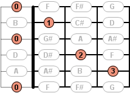
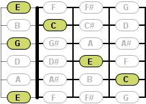
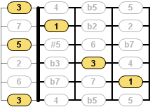

The Fretboard View shows a stylised representation of the fretboard of the currently active instrument. This image of the fretboard is deliberately simplified to focus on the essential information content.
The visual representation of the fretboard strongly depends in some points on the definition of the active instrument. If the currently active instrument, for instance, is a fretless instrument the frets will be drawn dotted. Doubled strings will be shown correspondingly, whereas doubled strings with an octave jump will be marked with an asterisk.
The main task of this view is to show the chords and scales in the context of a whole fretboard. You can choose between a fingering, notes and interval mode.
This view additionally enables the selection of the current scale block (the part of the scale highlighted in blue). In order to select the current scale block, the Fretboard View first needs to be in focus. Then you can easily navigate between the individual scale blocks using the cursor keys.
The Fretboard View also highlights the tones of a currently played chord or scale block. Thus, you can see exactly which tone is currently being played and for how long.
Besides, it is possible to play freely on the fretboard and experiment a little. A simple mouse click plays the selected note. You can define in the sound preferences how long a played tone shall sound.
The toolbar of the Fretboard View contains the following actions:
Switches to the fingering mode of this view. The fingering of the currently selected chord or scale block will be shown.

Switches to the notes mode of this view. The notes of the currently selected chord or scale (block) will be shown.

Switches to the interval mode of this view. The intervals of the currently selected chord or scale (block) will be shown.

Clears the currently shown input (chord or scale) from this view.
The menu of the Fretboard View contains the following actions:
 Show Fingering
Show Fingering
 Show Notes
Show Notes
 Show Intervals
Show Intervals
 Clear Input
Clear Input
Opens the preferences dialog. The page with the preferences for this view is already pre-selected.
The pop-up menu of this view contains the following actions:
Exports the current visual representation of the fretboard as an image file. You can specifiy the file name and type (.bmp, .jpg or .png) in a corresponding dialog box. The size of the export image can be defined in the export preferences.
Copies the current visual representation of the fretboard into the clipboard. The stored image data in the clipboard may be pasted, for instance, into office applications later on. The size of the image can be defined in the export preferences as well.
Workbench → Preferences → Views → Fretboard
Workbench → Preferences → Export
Workbench → Preferences → Blocks
Workbench → Preferences → Sound